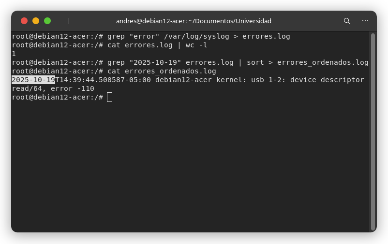
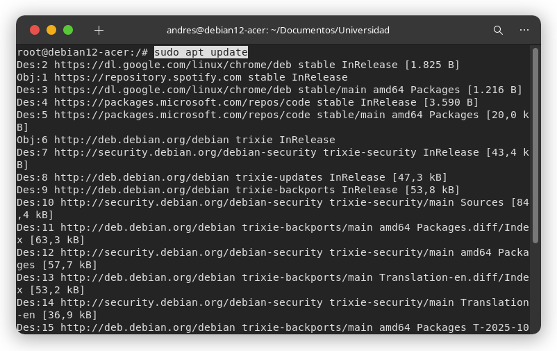
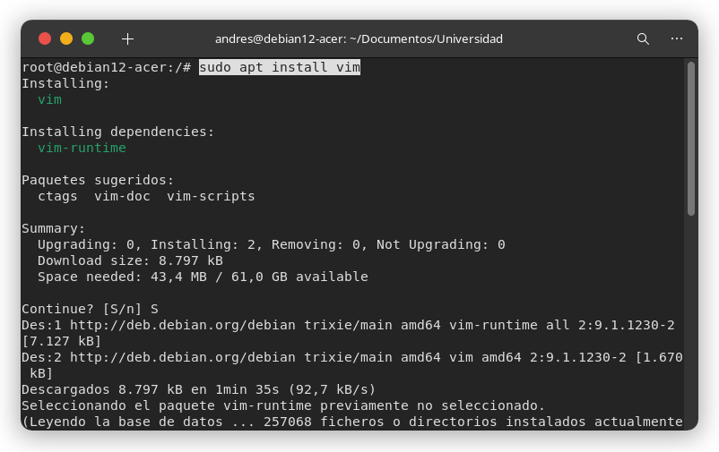
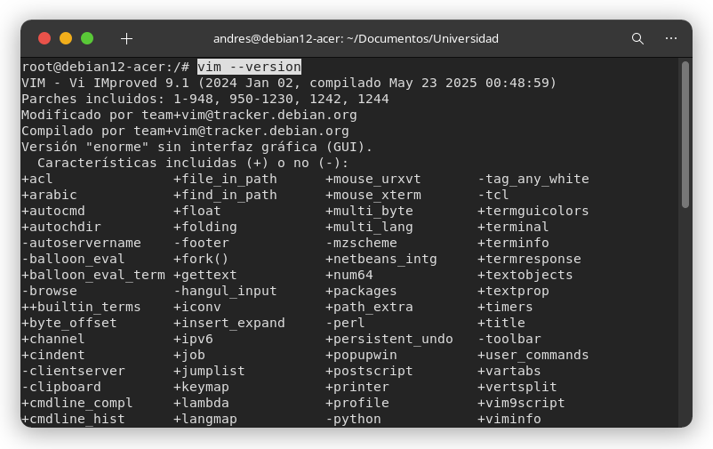
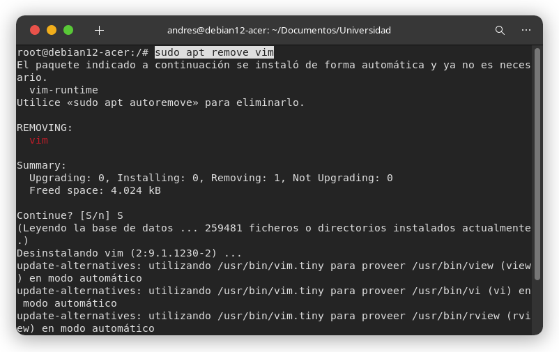
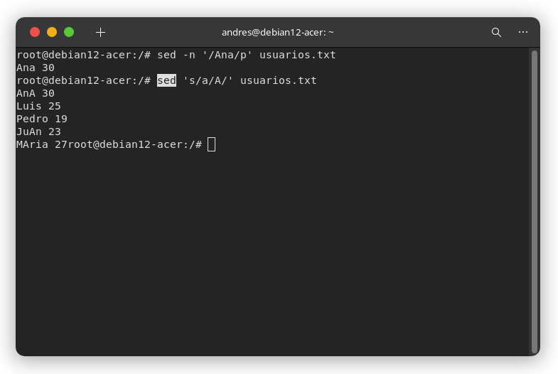
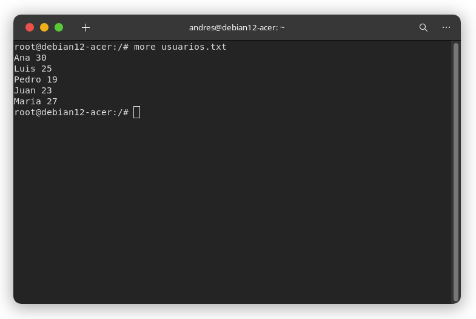

ACTIVIDAD 1
Tarea 1 - Filtrado y redireccionamiento
grep "error" /var/log/syslog > errores.log
Tarea 2 - Procedimiento con Pipelines
cat errores.log | wc -l
Tarea 3 - Orden y filtrado avanzado
grep "fecha_actual" errores.log | sort > errores_ordenados.log
1. ¿Qué comando fue más útil para esta tarea?
El comando más útil fue grep. Nos permitió filtrar rápidamente los datos.
2. ¿Cómo facilita el redireccionamiento y el uso de pipelines el procesamiento de datos en logs grandes?
Facilita de una manera abismal. Evita crear multiples archivos temporales y todo el procesamiento se puede hacer en una sola línea de código, tan solo con escribir un carárter más.
ACTIVIDAD 2
Tarea 1 - Actualización de la lista de paquetes
sudo apt update

# Como hay paquetes por actualizar
sudo
apt
upgrade
Tarea 2 - Instalación de paquetes
sudo apt install vim
vim --version # verificar instalación
Tarea 3 - Eliminacón de paquetes
sudo apt remove vim

# Borramos el paquete innecesario
sudo
apt
autoremove
Tarea 4 - Instalación de herramientas específicas
apt install curl curl -0 http://ejemplo.com/archivo.txt
1. ¿Por qué es importante actualizar una lista de paquetes antes de una instalación?
Para mantener el sistema actualizado y seguro, evitar errores con la instalación y porque así nos puede funcionar mejor.
2. ¿Qué ventajas tiene desinstalar paquetes innecesarios del sistema?
Nos ahorra espacio, nos mantiene libre de posibles amenazas y mantiene limpio nuestro sistema.
OTROS COMANDOS
ALTERNATIVAS A GREP
awk
Awk puede filtrar, formatear y procesar columnas.
Recibe como argumento la palabra o patrón que
deseas buscar entre medio de barras inclinadas "/".
awk /Ana/ usuarios.txt
Puedes filtar por columnas utilizando '{print $1}' como argumento.
Puede ser '{print $2}' para
la segunda columna (palabra) de cada línea y así sucesivamente.
awk '{print $1}' usuarios.txt

sed
En sed el parametro -n evita que se impriman todas las líneas. Al igual que awk le pasamos la palabra que deseamos buscar entre barras, y le agregamos "p" al final para indicar que sí se muestre la línea que contenta dicha palabra (print Ana).
sed -n '/Ana/p' usuarios.txt
Por defecto, sed lee cada línea del archivo y la imprime automáticamente, incluso si tú no le dices que lo haga.
sed 's/a/A' usuarios.txt
Esto reemplaza la primera “a” por “A” en cada línea, y luego imprime todas las líneas, incluso las que no cambió.
ALTERNATIVAS CAT
less
less usuarios.txt
Less muestra el contenido del archivo en forma de páginas, así si el archivo es muy grande lo
divide y puedes navegar por el contenido pulsando:
Espacio - Página
siguiente
b - Página anterior
q - Salir
more
more usuarios.txt
Es similar a less, pero más básico. Muestra el archivo una pantalla a la vez.
Espacio - Siguiente
q - Salir
Si el archivo es pequeño, se comporta prácticamente igual que cat.
ALTERNATIVAS WC -l
awk
awk 'END {print NR}' usuarios.txt
NR Es una variable interna de awk que cuenta el número de registros (líneas)
procesadas.
END {...} Indica que el bloque se ejecutará al final del archivo, es decir lo que está
dentro de paréntesis.
print NR Imprime en número totoal de líneas.
sed
sed -n '$=' usuarios.txt
-n No imprime las líneas del archivo.
'$=' Cuando llega a la última línea ($), imprime su número (=).